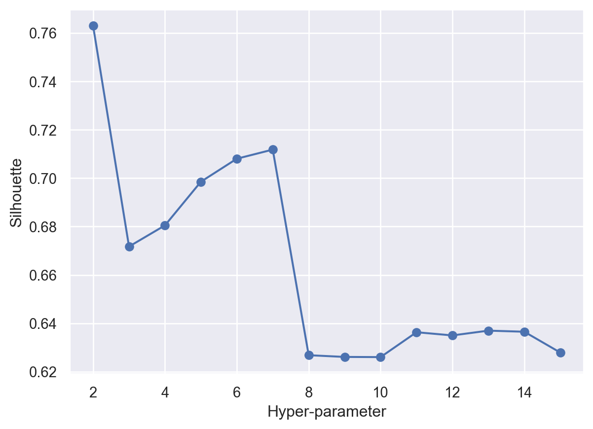

In this tab, we try to use clustering to group people who are more likely to be affected by rumors and people who are not likely to be. The data set used is “cleaned_followers.csv”.
Since we try to use clustering, we drop all categorical columns. Additionally, this is a unsupervised data, so we drop the label column. Besides, regularization will lead to a better result, so we also regularize the features. The user_id is taken into consideration because it reflect when the account is created.
Theory
Three clustering methods will be used in the following content, namely,KMEAN,DBSAN and Hierarchical Clustering. These tree methods are all based on the similarity(by calculating euclidean distance) of the instance.
Kmeans clusters the instances by continuously searching K centers. I will use both elbow method and silhouette method to decide how much groups it should be.
DBSAN groups the data points which the extent of similarity is below a certain level. I will use nearestneighbors to decide the extent of similarity I should choose.
Hierarchical Clustering sequentially combine the most similar instances/groups. Every single combination combines the most similar data point and set them as a level. The final group set can be any number I want. In this case, I will set 2 since this is the number the original data set says.
Method
This part will show the workflow of training the optimal models with three methods we’ve talked about.
Data Selection
The features we use is shown below. As mentioned before, I remove the labels and categorical columns as well as conduct standardlization.
Code
import pandas as pdfrom sklearn.preprocessing import StandardScaler# read the datadf=pd.read_csv("../../data/01-modified-data/cleaned_followers.csv")# remove the labels and categorical columnsdf=df.drop(["screen_name","protected","verfied","label"],axis=1)# conduct standarizationcol=df.columnsdf = pd.DataFrame(StandardScaler().fit_transform(df),columns=col)#drop the outliersdf=df[df["friends_count"]<5]df.head()
user_id
followers_count
friends_count
listed_count
favourites_count
tweet_num
0
-1.462589
-0.114256
-0.133278
-0.112242
-0.260739
-0.260023
1
0.761603
-0.109150
0.330401
-0.112242
-0.289027
-0.269354
2
0.875774
-0.116809
-0.159058
-0.112242
-0.287897
-0.269836
3
-1.462589
-0.112081
-0.156894
-0.102315
0.122106
-0.089817
4
-1.462589
-0.083147
0.029875
0.076364
0.574516
1.351783
Hyperparameter Tuning
For KMEAN, the hyperparameter tuning is based on the elbow method and the Silhouette methods. Normally, the K is picked when there is a turning point on the curve.
Code
import warningsfrom sklearn.cluster import KMeansimport matplotlib.pyplot as pltimport seaborn as snsimport numpy as npwarnings.filterwarnings('ignore')WCSS=[]for i inrange(1,11): kmeanModel=KMeans(n_clusters=i,init="k-means++",random_state=42) kmeanModel.fit(df) WCSS.append(kmeanModel.inertia_)sns.set_theme()plt.plot(range(1,11),WCSS)plt.title("The elbow method for optimal K",fontsize=20)plt.xlabel("The value of K",fontsize=16)plt.ylabel("Within cluster sum of squares(WCSS)",fontsize=16)
Text(0, 0.5, 'Within cluster sum of squares(WCSS)')
The elbow curve tells us that the best K value is 7
Code
import sklearn.cluster# THIS WILL ITERATE OVER ONE HYPER-PARAMETER (GRID SEARCH) # AND RETURN THE CLUSTER RESULT THAT OPTIMIZES THE SILHOUETTE SCOREdef maximize_silhouette(X,algo="birch",nmax=20,i_plot=False):# PARAM i_print=False#FORCE CONTIGUOUS X=np.ascontiguousarray(X) # LOOP OVER HYPER-PARAM params=[]; sil_scores=[] sil_max=-10for param inrange(2,nmax+1):if(algo=="birch"): model = sklearn.cluster.Birch(n_clusters=param).fit(X) labels=model.predict(X)if(algo=="ag"): model = sklearn.cluster.AgglomerativeClustering(n_clusters=param).fit(X) labels=model.labels_if(algo=="dbscan"): param=0.5*(param-1) model = sklearn.cluster.DBSCAN(eps=param).fit(X) labels=model.labels_if(algo=="kmeans"): model = sklearn.cluster.KMeans(n_clusters=param).fit(X) labels=model.predict(X)try: sil_scores.append(sklearn.metrics.silhouette_score(X,labels)) params.append(param)except:continueif(i_print): print(param,sil_scores[-1])if(sil_scores[-1]>sil_max): opt_param=param sil_max=sil_scores[-1] opt_labels=labelsprint("OPTIMAL PARAMETER =",opt_param)if(i_plot): fig, ax = plt.subplots() ax.plot(params, sil_scores, "-o") ax.set(xlabel='Hyper-parameter', ylabel='Silhouette') plt.show()return opt_labelsopt_labels=maximize_silhouette(df,algo="kmeans",nmax=15, i_plot=True)
OPTIMAL PARAMETER = 2

When applying silhouette method, the best number of groups is 2.
Since originally I need to divide the data set into two groups. To associate with my target, I choose 2 as my hyperparameter
For DBSN, we use nearestneighbors to find the optimal value of epsilon.
Code
# we use nearestneighbors for calculating distance between pointsfrom sklearn.neighbors import NearestNeighborsimport numpy as np# calculating distancesneigh=NearestNeighbors(n_neighbors=2)distance=neigh.fit(df)# indices and distance valuesdistances,indice=distance.kneighbors(df)# Now sorting the distance increasing ordersort_distances=np.sort(distances,axis=0)# sorted distancessorted_distances=sort_distances[:,1]# plot between distance vs epsilonplt.plot(sorted_distances)plt.xlabel('Distance')plt.ylabel('Epsilon')plt.show()
When we observe the graph, at epsilon is equal to 2 sharp rises in the graph so we choose epsilon(radius) as 2
For Hierarchy Clustering, since the originial data set is binarily seperated, we set k as 2, and use “ward”, which is robost to noise and outliers.
According to the results, KMEAN and hierarchy clustering returns a similar result. They sepearte the accounts which are more active with the others.For DBSAN, the best number of group calculated based on mathematical method is not what we want(2 groups).
The reason may be that just based on the information about account, the meaning of group is not exactly what we target at. Tjat may shift to something like “whether they are more likely to tweet”.
Unfortunately, clustering seems to fail to provide what we want.
Conclusion
In this tab, we have used three separate clustering model with the best hyperparameters to conduct unsupervised learning.
Clustering is not a suitable candidate to meet our demand. This is mainly because the result is not what we want.
To be specific, the result clustering gives may refers to the active status. This give us a hint that active status may have some connections to the groups we want, but can not directly tell us whether they are easily be affected by rumors
Reference
[1]Shaik, J. (2020, September 18). Practical implementation of K-means, hierarchical, and DBSCAN clustering on dataset with… Medium. Retrieved November 13, 2022, from https://medium.com/analytics-vidhya/practical-implementation-of-k-means-hierarchical-and-dbscan-clustering-on-dataset-with-bd7f3d13ef7f
[2]Brus, P. (2021, July 29). Clustering: How to find hyperparameters using inertia. Medium. Retrieved November 13, 2022, from https://medium.com/towards-data-science/clustering-how-to-find-hyperparameters-using-inertia-b0343c6fe819